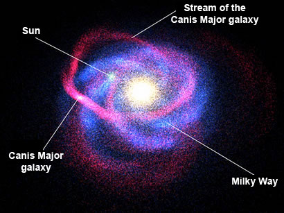
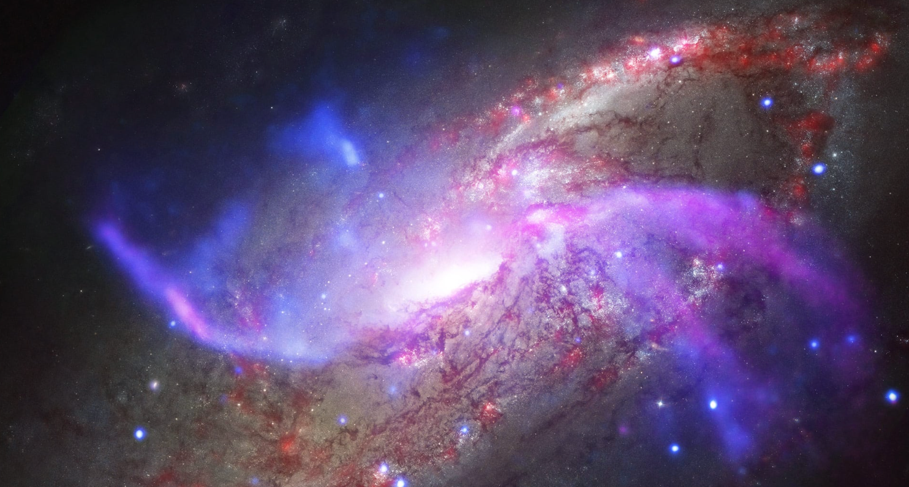
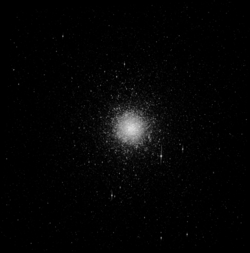
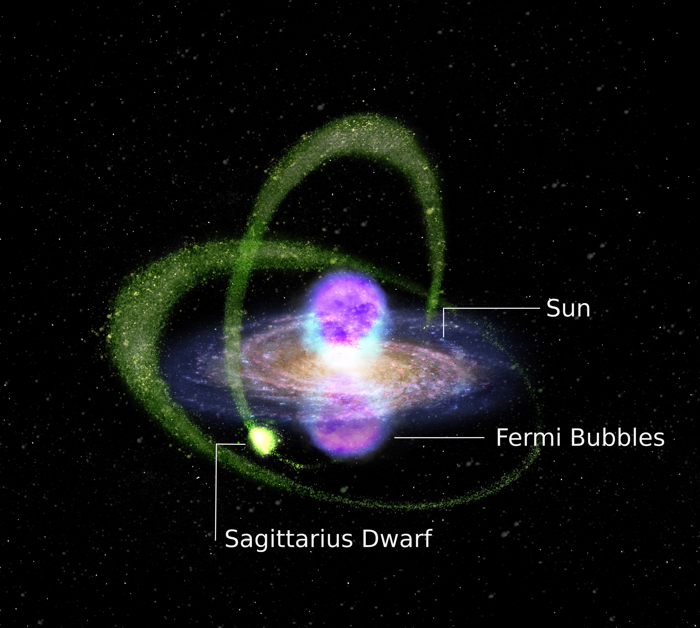
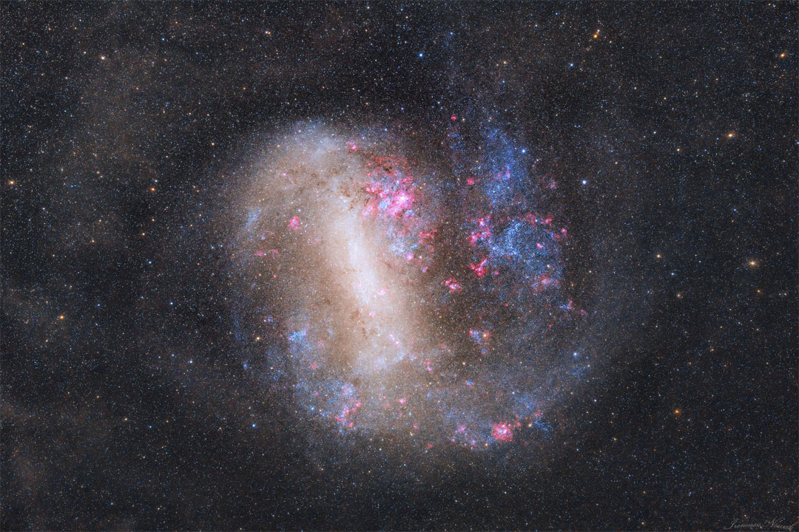
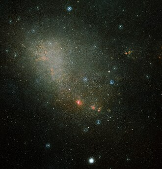
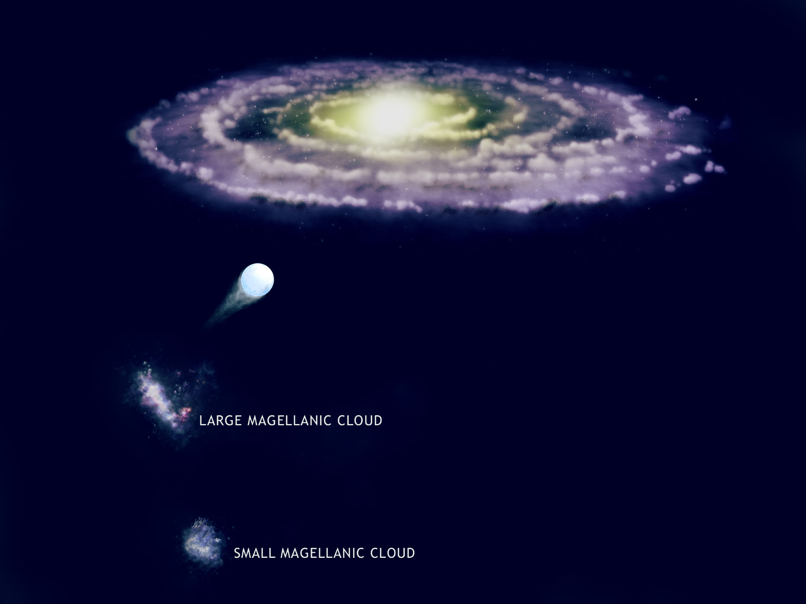
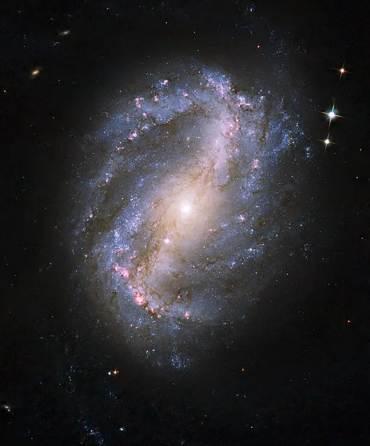
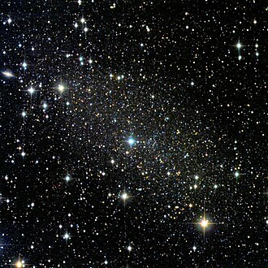

Canis Major Dwarf


The Canis Major Dwarf is our closest neighbor, located only 25,000 light-years away. It is currently being pulled apart by the Milky Way's gravity.
Sagittarius Dwarf Spheroidal


The Sagittarius Dwarf Spheroidal is located about 70,000 light-years away. This galaxy is currently being "eaten" or stretched out by the Milky Way’s gravity.
Large Magellanic Cloud (LMC)


The Large Magellanic Cloud (LMC) one of the brightest neighbors, visible to the naked eye from the Southern Hemisphere. It is about 163,000 light-years away.
Small Magellanic Cloud (SMC)


The Small Magellanic Cloud (SMC) the companion to the LMC, located roughly 200,000 light-years away.
Ursa Minor Dwarf


The Ursa Minor Dwarf A small, faint galaxy about 205,000 light-years away in the northern sky.